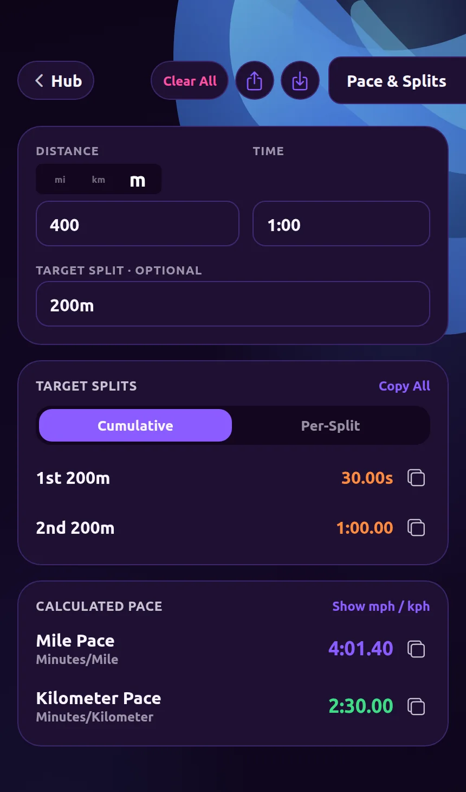
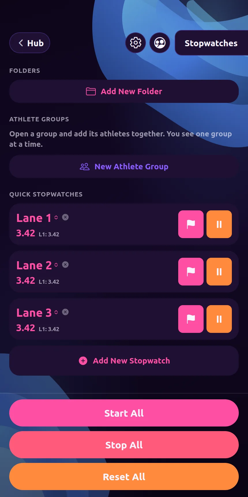
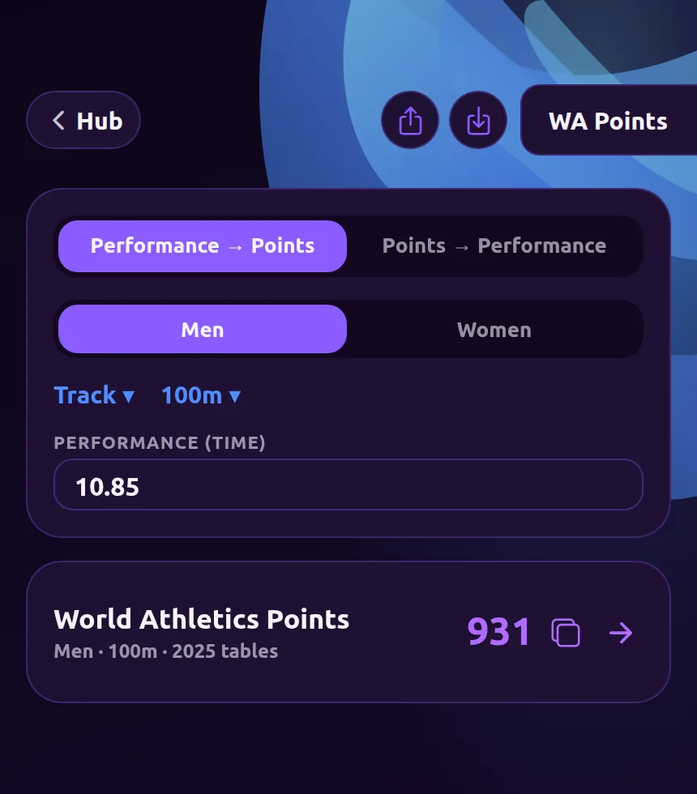

BetterTrack
Free trackside tools for coaches and athletes.
Calculate pace and splits, time multiple athletes, and compare performances with World Athletics points.
Included tools
-
Pace & Splits
Calculate pace, splits, and target times.

-
Multi Stopwatch
Run several stopwatches at once with laps and a start-all button.

-
World Athletics Points Converter
Convert any performance to World Athletics points.
